HAPPY NEW YEAR TANZANIA는 CAMA Mission Praise 2026의 이름으로 진행된 선교찬양제입니다. 탄자니아 샤론쉘터의 위기모자가정과 아이들을 위한 공부방 사역을 후원하고, 예술과 예배를 통해 복음의 사랑을 나누기 위해 마련되었습니다.
무용, 찬양, 연주, 중창, 미디어 등 다양한 문화예술 사역자들이 함께하며, 각자의 달란트가 선교의 도구가 되는 현장을 보여주었습니다. CAMA는 이러한 사역을 통해 예술이 예배와 선교의 자리에서 하나님 나라의 문화를 세우는 통로가 되기를 소망합니다.
아래 사진과 자료는 행사 현장, 출연진, 프로그램, 후원 안내, 운영진 자료를 정리한 것입니다.
Photos & Materials
사진과 행사 자료
행사의 분위기와 사역의 목적을 보여주는 현장 사진 및 안내 자료입니다.
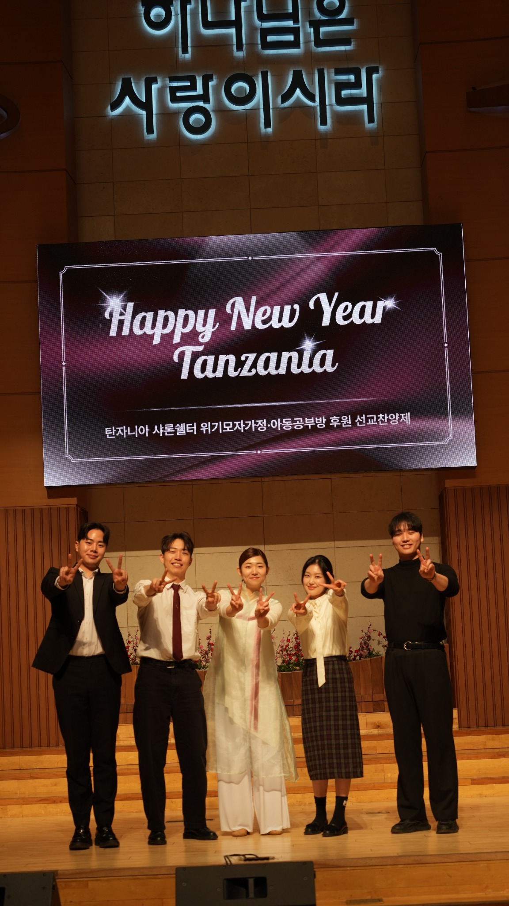
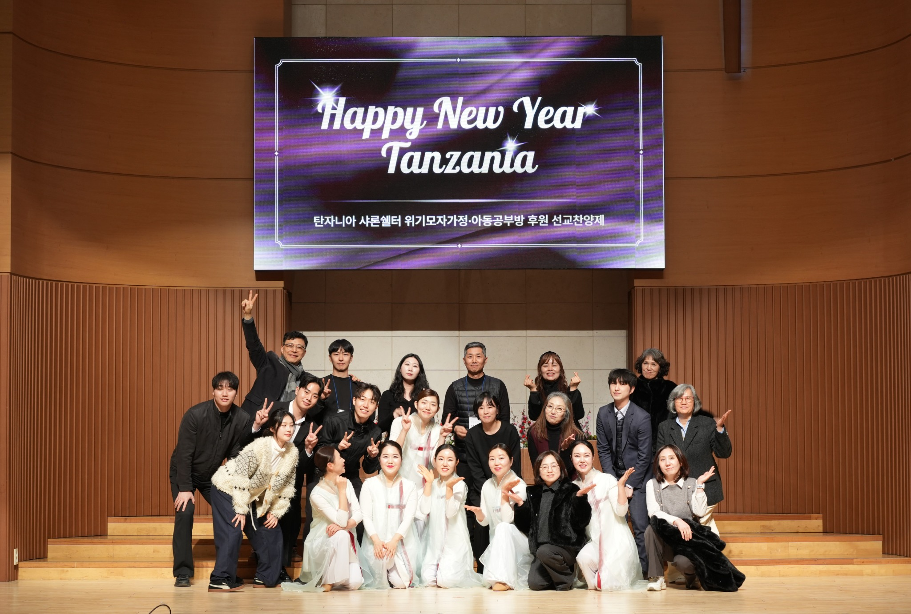
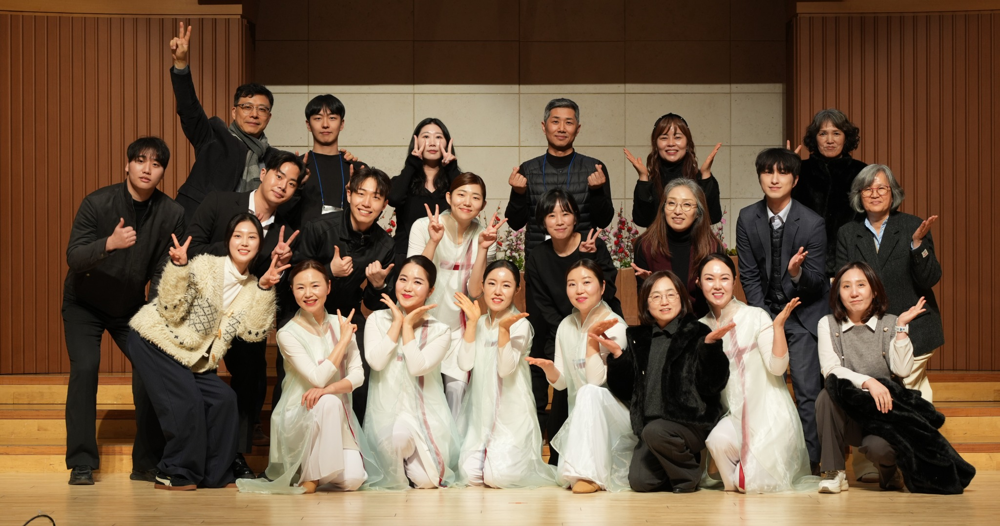
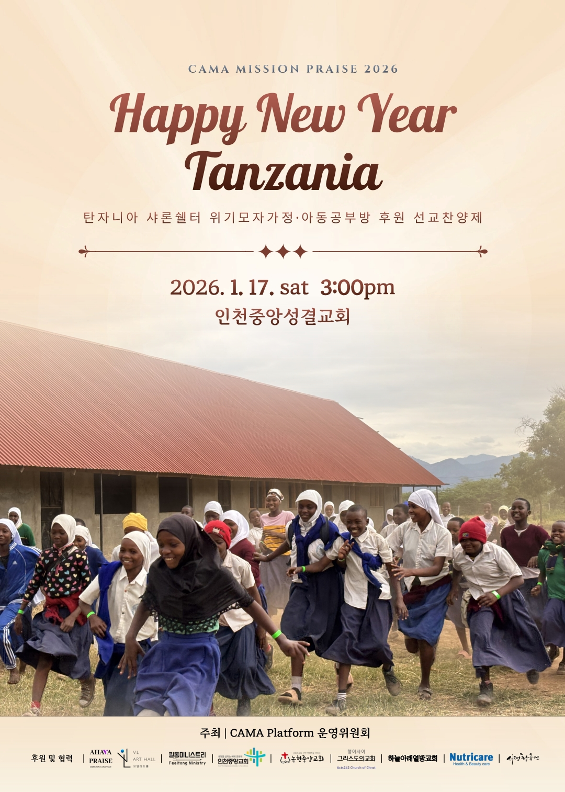
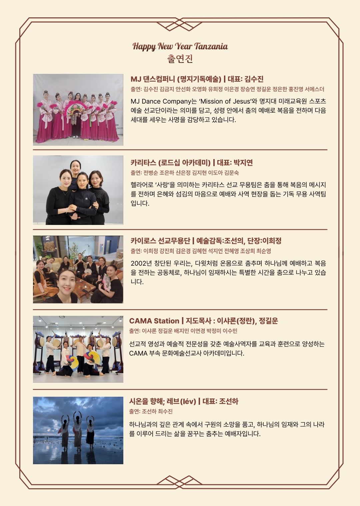
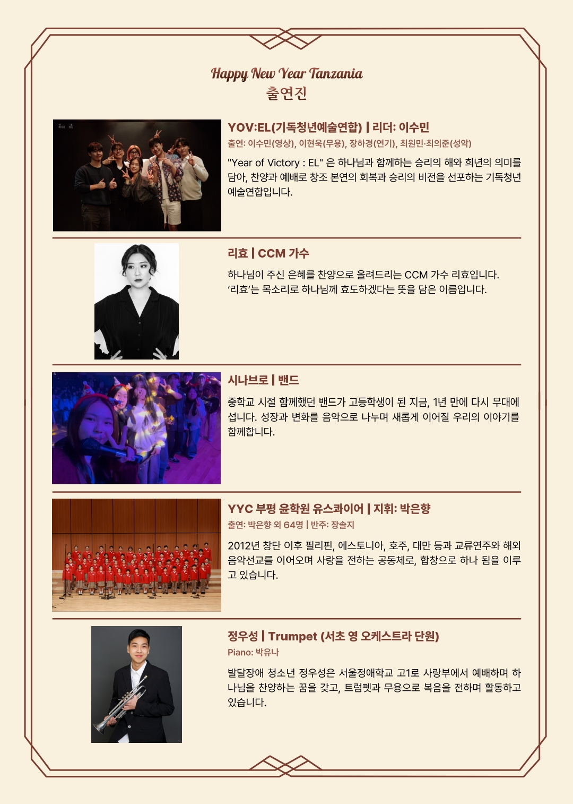
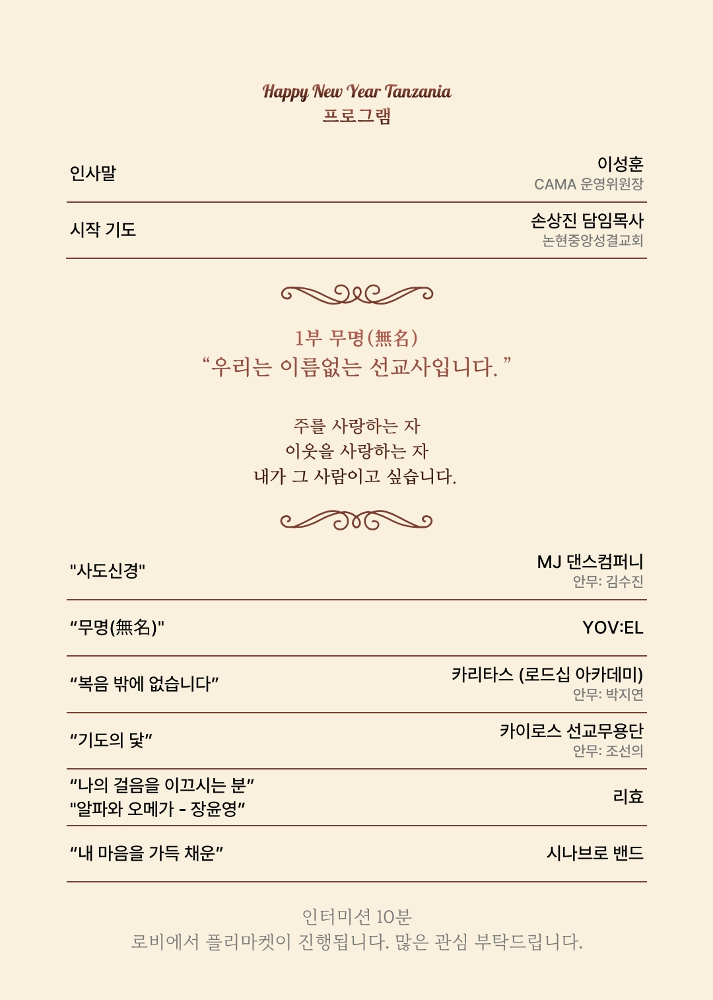
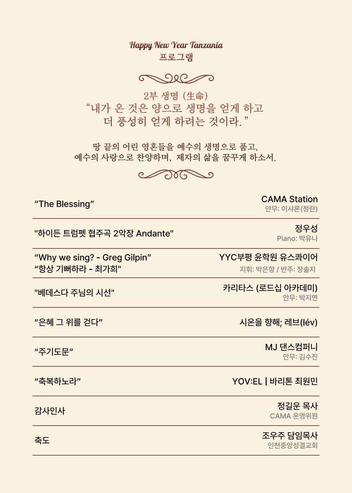
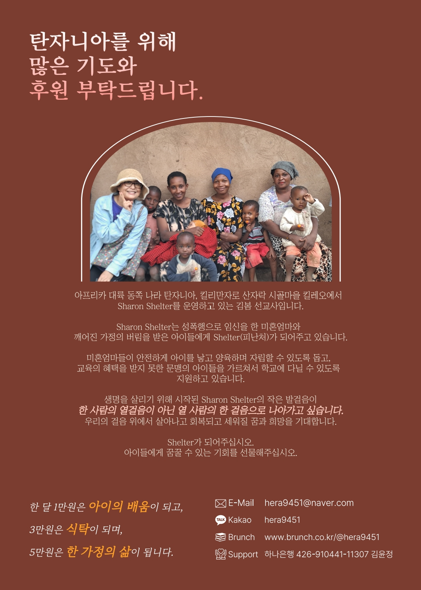
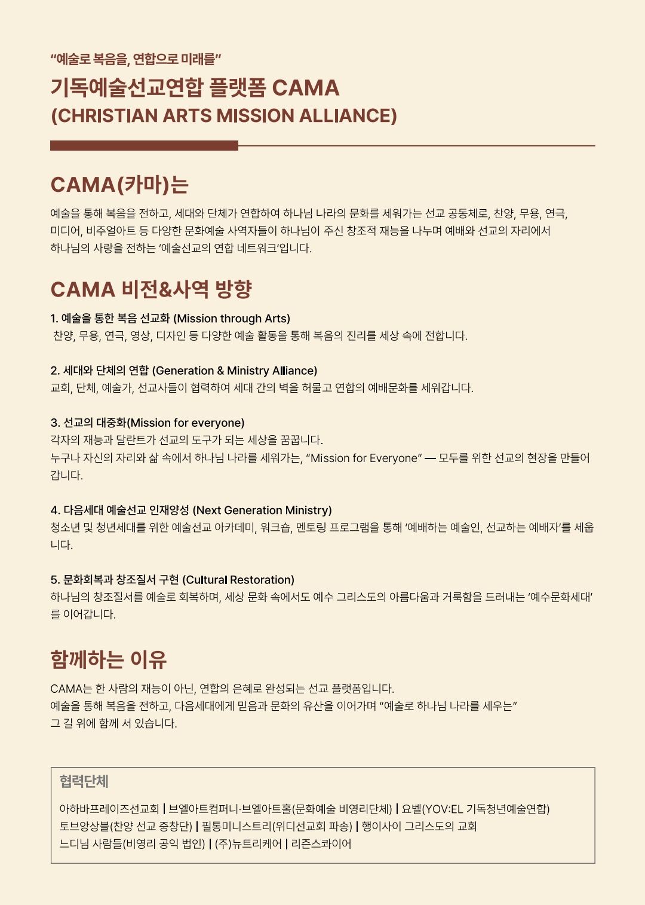
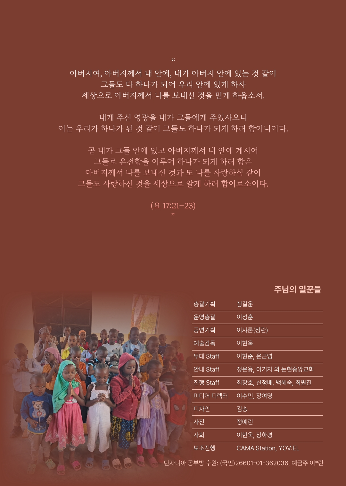